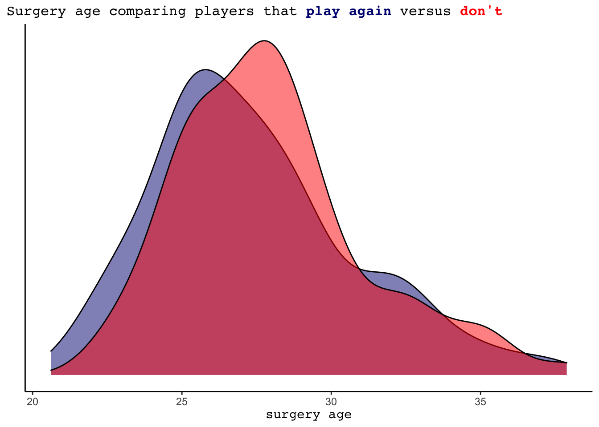

Tommy John Surgery and its Relationship to MLB Pitcher Career Trajectory
Erin Franke
#load libraries and data
library(tidyverse)
library(lubridate)
library(readxl)
library(bayesrules)
library(tidyverse)
library(rstanarm)
library(broom.mixed)
library(tidybayes)
library(forcats)
library(bayesplot)
library(ggtext)
library(janitor)
library(gt)
library(tidymodels)
library(probably)
library(vip)
library(ggmosaic)
tidymodels_prefer()
`%!in%` <- Negate(`%in%`)
seasonal_complete <- read_csv("data/seasonal_complete.csv")Introduction
A pitcher’s success can vary dramatically over the course of their major league career. 2015 Cy Young Jake Arrieta had tremendous success in the middle of his career, but began his career with the Orioles where he pitched at levels far below league average. In more recent seasons he has also struggled. To measure a pitcher’s success overtime, we might look at ERA+, which takes a player’s earned run average each season and normalizes it across the entire league. An ERA+ of 100 represents league average, 150 and 80 would respectively represent 50% better and 20% worse than league average. Despite many still considering Arrieta legendary, the quality of his pitching has been slowly declining since his Cy Young season it is clear his value to a team is not the same as it once was. Arrieta’s career trajectory can be seen on the graph on the left below, but this path is just one example of the type of trajectory a player’s career may take. Current Atlanta Brave Drew Smyly has had a lot of variability in his success as a pitcher, as seen on the graph on the right. While his first four seasons appeared quite strong, Smyly performed below average 2016 and 2019 and since has had a little more success.
seasonal_complete %>%
filter(Player == "Jake Arrieta") %>%
ggplot(aes(x=Year, y=`ERA+`))+
geom_point()+
theme_classic()+
labs(x="", title = "Jake Arrieta's ERA+ over his career")+
theme(plot.title.position = "plot",
plot.title = element_text(family = "mono", size = 12))+
geom_smooth(method="loess", se=FALSE, color = "azure3")
seasonal_complete %>%
filter(Player == "Drew Smyly") %>%
ggplot(aes(x=Year, y=`ERA+`))+
geom_point()+
theme_classic()+
labs(x="", title = "Drew Smyly's ERA+ over his career")+
theme(plot.title.position = "plot",
plot.title = element_text(family = "mono", size = 12))+
ylim(c(50, 220))+
geom_smooth(method = "loess", se=FALSE, color = "azure3")
What might contribute to these pitching trends? While trends are incredibly complex and the result of many different factors, a major factor to pitching success is health. Notice Smyly’s missing stats in 2017 and 2018 - during this period, he underwent Tommy John surgery. Tommy John surgery is a major surgery that repairs a torn ulnar collateral ligament in the elbow by replacing it with a tendon from another part of a player’s body. Recovery typically takes a year, but can take up to 2.
This analysis will seek to understand how the trajectory of a pitcher’s MLB success changes over the course of his career, with a focus especially on players who undergo Tommy John surgery at some point after their MLB debut. We will answer two questions in this study. First, how well can we predict whether or not a player will return from Tommy John surgery to play again at the major league level? Second, what correlates with an MLB starting pitcher’s seasonal success, and how does this seasonal success change over a player’s career? The goal of this analysis will be to help scouts make smarter decisions when drafting players and gain greater insight to if there are risks of drafting players that have undergone Tommy John surgery or may need Tommy John surgery in the future.
Data
This analysis uses data from all players drafted since 1987, the first year that the Secondary January Amateur draft did not exist. Data for this analysis were collected from multiple sources. Information on each player’s draft round and year were collected from a GitHub source and checked for accuracy. Unfortunately, I can no longer find the webpage where I originally downloaded this data from. I then joined these data by player name and birth date with career level pitcher statistics and debut information from Baseball Reference, which had to be downloaded individually for each season. Tommy John surgery information was obtained from MLB Reports, and finally individual player data on the seasonal level were downloaded from Stathead Baseball. The diversity of the downloaded data allowed me to create a database with a wide variety of variables, and enables the comparison between players as well as the analysis of a player’s development over the course of their career.
The main variables I will use in this analysis are displayed in the codebook below. They come from my final data set, which is called seasonal_complete. My process to create this data set is fully documented in the data cleaning section of this website.
codebook = data.frame(Variable = c("Player", "Year", "Age", "hs_draftee", "birth_date", "Debut", "round", "surgery1Year", "statsTime", "surgery1time", "surgery_age", "ERA+", "G", "GS", "IP", "WHIP", "kRate"),
Meaning = c("name of pitcher", "year of MLB season", "player age during season", "whether the player was drafted in high school", "player date of birth", "player MLB debut data", "the player's draft round", "the year the player had their first Tommy John surgery while in the MLB", "whether the stats for this season come before or after the player's first surgery", "whether the player's first surgery came before draft, between draft & debut, or after debut", "age of pitcher at first surgery", "adjusts a pitcher's ERA according to the pitcher's ballpark and the ERA of the pitcher's league", "games played", "games started", "innings pitched", "number of walks + hits per inning pitched", "average number of strikeouts per inning"))
codebook %>%
gt() %>%
tab_header(
title = md("**Codebook**")
) %>%
tab_style(
style = cell_fill(color = "honeydew"),
locations = cells_body(
rows = Variable %in% c("Player", "Age", "birth_date", "round", "statsTime", "surgery_age", "G", "IP", "kRate"))) %>%
tab_style(
style = cell_fill(color = "lightcyan3"),
locations = cells_body(
rows = Variable %!in% c("Player", "Age", "birth_date", "round", "statsTime", "surgery_age", "G", "IP", "kRate"))) %>%
tab_options(
table.font.size = px(13L)
)| Codebook | |
|---|---|
| Variable | Meaning |
| Player | name of pitcher |
| Year | year of MLB season |
| Age | player age during season |
| hs_draftee | whether the player was drafted in high school |
| birth_date | player date of birth |
| Debut | player MLB debut data |
| round | the player's draft round |
| surgery1Year | the year the player had their first Tommy John surgery while in the MLB |
| statsTime | whether the stats for this season come before or after the player's first surgery |
| surgery1time | whether the player's first surgery came before draft, between draft & debut, or after debut |
| surgery_age | age of pitcher at first surgery |
| ERA+ | adjusts a pitcher's ERA according to the pitcher's ballpark and the ERA of the pitcher's league |
| G | games played |
| GS | games started |
| IP | innings pitched |
| WHIP | number of walks + hits per inning pitched |
| kRate | average number of strikeouts per inning |
Understanding career trajectory
Age distribution
In understanding career trajectory and longevity, we should first understand the age distribution of players in the MLB. Using all pitchers that played in the 2021 season, we get the following age distribution and see most pitchers are aged between their low twenties and low thirties.
seasonal_complete %>%
filter(Year == 2021) %>%
ggplot(aes(x=Age))+
geom_density(fill = "lightcyan3")+
theme_classic()+
labs(title = "Age distribution of pitchers in the MLB", x="Age", y="")+
theme(plot.title.position = "plot",
plot.title = element_text(family = "mono", size = 11),
axis.title.x = element_text(family = "mono", size = 11))
Career length
In trying to understand the impact of having Tommy John surgery on a player’s career, we should seek to understand if there are differences in career length for players that receive the surgery. To do this, we compare the career length in seasons of players that did not have surgery at any point in their career to those that had surgery between their draft and debut date. We remove players that had surgery in the MLB for this graph - the fact that they made it far enough in their MLB career to have a surgery during it is an indicator of career length. Additionally, we do not include players that had surgery before being drafted as scouts deemed them worthy enough to be drafted despite their surgery. When looking at the graph, there do not seem to be any significant differences.
seasonal_complete %>%
filter(surgery1time %!in% c("after debut", "before draft")) %>%
mutate(surgery1time = case_when(surgery1time == "between draft and debut" ~ "between draft and debut",
TRUE ~ "no surgery")) %>%
group_by(Player, surgery1time) %>%
summarize(n = n(), lastyear = max(Year)) %>%
filter(lastyear < 2020) %>%
ggplot(aes(x=n, fill=surgery1time))+
geom_density(alpha = 0.5)+
theme_classic()+
scale_fill_manual(values = c("deepskyblue4", "sienna2"))+
labs(x="career length (seasons)", y="", title = "MLB career length (seasons) averages similar length for players that<strong><span style='color:sienna2'> didn't have Tommy John</span></strong></b>", subtitle = "<strong><span style='color:sienna2'> surgery before debuting </span></strong></b>in comparison to <strong><span style='color:deepskyblue4'>those that had surgery between draft and debut</span></strong></b>")+
theme(plot.title = element_markdown(size = 9, family = "mono"),
plot.subtitle = element_markdown(size = 9, family = "mono"),
plot.title.position = "plot",
legend.position = "none",
axis.title.x = element_text(family = "mono", size = 9))Performance
For players having their first Tommy John surgery following their MLB debut, it could be interesting to understand how their performance compares before versus after their surgery. In the following graph, we can notice that players average more innings following their surgery if it is done while they are younger. On the other hand, as players age into their thirties they almost always average fewer innings after the surgery. Players that did not play following their surgery are shown in red, but this trend holds even just looking at the blue dots, which represent players that play again after their surgery.
diffIP <- seasonal_complete %>%
filter(surgery1time == "after debut") %>%
group_by(Player, statsTime) %>%
summarize(avg_IP = round(mean(IP),2),
surgery_age = time_length(difftime(`Surgery 1`, birth_date), "years")) %>%
select(Player, surgery_age, statsTime, avg_IP) %>%
distinct() %>%
pivot_wider(id_cols = Player:surgery_age, names_from = statsTime, values_from = avg_IP)
diffIP$after <- replace_na(diffIP$after, 0)
diffIP %>%
mutate(difference = after - before,
leaveMLB = case_when(after == 0 ~ "leave MLB",
TRUE ~ "continue playing")) %>%
ggplot(aes(x=surgery_age, y= difference, color = leaveMLB))+
geom_point()+
theme_classic()+
geom_hline(yintercept = 0, linetype = "dashed", color = "red") %>%
labs(title = "Pitchers tend to average fewer seasonal innings post Tommy John surgery than prior to it", subtitle = "Players that leave the MLB completely are shown in<strong><span style='color:red'> red</span></strong></b>", x = "surgery age", y = "Average seasonal IP after - before surgery")+
theme(plot.title = element_markdown(size = 9, family = "mono"),
plot.subtitle = element_markdown(size = 9, family = "mono"),
plot.title.position = "plot",
axis.title.x = element_markdown(size = 8, family = "mono"),
axis.title.y = element_markdown(size = 8, family = "mono"),
legend.position = "none")+
geom_hline(yintercept = 0, linetype = "dashed", color = "black") +
scale_color_manual(values = c("navy", "red"))
Playing after Tommy John surgery
Tommy John surgery is a major procedure to go through, and thus it is not certain that a pitcher will return to the MLB following this surgery. For the 318 pitchers in this study that received Tommy John surgery following their MLB debut, 233 (73.27%) of them returned to the MLB to play again. These 318 pitchers all had the surgery prior to 2020, as many of those that received the surgery in 2020 and certainly in 2021 will not yet have recovered and returned major league baseball.
#filter for players that had surgery after their debut but in years prior to 2020. Group by player and summarize their number of seasons after and before surgery, as well as create an indicator variable for if they play after surgery.
play_post_surgery <- seasonal_complete %>%
filter(surgery1time == "after debut", surgery1Year < 2020) %>%
group_by(Player) %>%
count(statsTime) %>%
pivot_wider(id_cols = Player, names_from = statsTime, values_from = n) %>%
mutate(played_after = case_when(is.na(after) == TRUE ~ 0,
TRUE ~ 1))
# 73.27% of players play following their surgery
play_post_surgery %>%
tabyl(played_after)
#join with seasonal complete to get more information about these players. Currently, the data is no longer grouped by player.
seasonal_SurgPostdebut <- seasonal_complete %>%
filter(surgery1time == "after debut", surgery1Year < 2020) %>%
left_join(play_post_surgery, by = "Player")
#filter for seasonal stats before surgery. Eliminate any WHIPS of Inf. Group by player and find their age at surgery.
stats <- seasonal_SurgPostdebut %>%
filter(statsTime == "before", WHIP < 100) %>%
group_by(Player) %>%
mutate(surgery_age = time_length(difftime(`Surgery 1`, birth_date), "years"),
games_started = sum(GS),
games = sum(G),
starter = case_when(games_started/games < 0.5 ~ 0,
TRUE ~ 1),
starter = as.factor(starter),
totalIP = sum(IP),
kRate = case_when(totalIP >=1 ~ sum(SO)/totalIP,
TRUE ~ sum(SO)), #prevents krate of 5 for player that had one strikeout and pitched 0.2 innings
totwalks = sum(BB),
totH = sum(H),
avgWHIP = (totwalks+totH)/totalIP,
played_after = as.factor(played_after)) %>%
select(hs_draftee, played_after, surgery_age, starter, kRate, totalIP, avgWHIP) %>%
distinct()Exploratory Data Analysis
If a team has a player decide to undergo Tommy John surgery, or is debating signing a player needing surgery, it would be helpful to understand what might be correlated with a player returning to the majors following their surgery.
A few possible performance based variables to look into could be the pitcher’s average strikeout rate and average WHIP, as well as total innings pitched prior to the surgery. We see that pitchers that return to the MLB tend to have slightly lower (better) WHIPs and slightly higher (better) strikeout rates. Additionally, the innings pitched variable appears highly informative. 75.29% of the pitchers that did not return to the MLB pitched fewer than 200 innings prior to their surgery. In comparison, only 51.5% of the pitchers that played after pitched less than 200 innings.
#understand relationship between 200 innings pitched prior to surgery and return to MLB rate
stats %>%
mutate(manyIP = case_when(totalIP >= 200 ~ "high",
TRUE ~ "low")) %>%
group_by(manyIP, played_after) %>%
count()#create graph for relationship between average WHIP and playing after surgery
stats %>%
filter(avgWHIP < 2.5, avgWHIP > 0.5) %>%
ggplot(aes(x=avgWHIP, fill = played_after))+
geom_density(alpha=0.5) +
theme_classic()+
labs(x= "average WHIP", y = "", title = "Average WHIP prior to Tommy John surgery comparing pitchers", subtitle = "that <strong><span style='color:navy'>play again</span></strong></b> versus <strong><span style='color:red'>don't</span></strong></b>")+
scale_fill_manual(values = c("navy", "red"))+
theme(axis.text.y = element_blank(),
axis.ticks.y = element_blank(),
plot.title.position = "plot",
plot.title = element_markdown(family = "mono", size =14),
plot.subtitle = element_markdown(family = "mono", size =14),
legend.position = "none",
axis.title.x = element_markdown(family="mono", size=11))
#create graph for relationship between average strikeout rate and playing after surgery
stats %>%
ggplot(aes(x=kRate, fill = played_after))+
geom_density(alpha=0.5) +
theme_classic()+
labs(x= "strikeout rate per inning", y = "", title = "Average K rate prior to Tommy John surgery comparing pitchers", subtitle = "that <strong><span style='color:navy'>play again</span></strong></b> versus <strong><span style='color:red'>don't</span></strong></b>")+
scale_fill_manual(values = c("navy", "red"))+
theme(axis.text.y = element_blank(),
axis.ticks.y = element_blank(),
plot.title.position = "plot",
plot.title = element_markdown(family = "mono", size =14),
plot.subtitle = element_markdown(family = "mono", size =14),
legend.position = "none",
axis.title.x = element_markdown(family="mono", size=11))
#create graph for relationship between total innings pitched and playing after surgery
stats %>%
ggplot(aes(x=totalIP, fill = played_after))+
geom_density(alpha=0.5) +
theme_classic()+
labs(x= "total IP", y = "", title = "Total IP prior to Tommy John surgery comparing players that <strong><span style='color:navy'>play again</span></strong></b> versus <strong><span style='color:red'>don't</span></strong></b>")+
scale_fill_manual(values = c("navy", "red"))+
theme(axis.text.y = element_blank(),
axis.ticks.y = element_blank(),
plot.title.position = "plot",
plot.title = element_markdown(family = "mono", size =10),
legend.position = "none",
axis.title.x = element_markdown(family="mono", size=9))
In addition to performance metrics, we can see if there is any relationship between a pitcher playing after their surgery and their role (starter or reliever) as well as whether they were a high school draftee.
# create mosiac plot showing relationship between starter versus reliever and results of playing again
stats %>%
mutate(starter = recode(starter, "0" = "reliever", "1" = "starter")) %>%
ggplot()+
geom_mosaic(aes(x = product(played_after,starter), fill = played_after), alpha = 0.7) +
labs(x= "", y = "", title = "Starters <strong><span style='color:navy'>play after surgery</span></strong></b> more often than relievers")+
scale_fill_manual(values = c("navy", "red")) +
theme_classic()+
theme(axis.text.y = element_blank(),
axis.ticks.y = element_blank(),
plot.title = element_markdown(family = "mono", size =13),
legend.position = "none",
axis.text.x = element_markdown(family = "mono", size = 11))
# create mosiac plot showing relationship between high school draftee indicator and results of playing again
stats %>%
mutate(hs_draftee = case_when(hs_draftee == TRUE ~ "high school",
hs_draftee == FALSE ~ "college/international")) %>%
ggplot()+
geom_mosaic(aes(x = product(played_after,hs_draftee), fill = played_after), alpha = 0.7) +
labs(x= "", y = "", title = "High school draftees <strong><span style='color:navy'>play after surgery</span></strong></b> slightly more often", subtitle = "than college or international picks")+
scale_fill_manual(values = c("navy", "red")) +
theme_classic()+
theme(axis.text.y = element_blank(),
axis.ticks.y = element_blank(),
plot.title = element_markdown(family = "mono", size =13),
plot.subtitle = element_markdown(family = "mono", size =13),
legend.position = "none",
axis.text.x = element_markdown(family = "mono", size = 11))
A final variable to investigate is the age at which the player is having the Tommy John surgery. Below, we see that pitchers that pitch again tend to be slightly younger in age at the time of their surgery in comparison to those that do not play again. However, this difference is not quite as substantial as one might have originally thought.
stats %>%
ggplot(aes(x=surgery_age, fill = played_after))+
geom_density(alpha=0.5) +
theme_classic()+
labs(x= "surgery age", y = "", title = "Surgery age comparing players that <strong><span style='color:navy'>play again</span></strong></b> versus <strong><span style='color:red'>don't</span></strong></b>")+
scale_fill_manual(values = c("navy", "red"))+
theme(axis.text.y = element_blank(),
axis.ticks.y = element_blank(),
plot.title.position = "plot",
plot.title = element_markdown(family = "mono", size =12),
legend.position = "none",
axis.title.x = element_markdown(family="mono", size = 11))
Model Introduction and Priors
Having a basic understanding of some of these variables, we can now build a logistic regression model. In building this model, we will let \(Y\) be a binary indicator of if the pitcher plays again at the MLB level following his Tommy John surgery, which occurs at probability \(\pi\). Understanding the results of the exploratory data analysis, this model will utilize the following predictors:
- \(X_1\): indicator variable for if a player is a starter (1) or reliever (0)
- \(X_2\): continuous variable representing the total number of innings pitched by a player prior to their surgery
- \(X_3\): continuous variable representing the player’s average WHIP prior to their surgery
- \(X_4\): indicator variable of if a player was a high school draftee
- \(X_5\): continuous variable representing a pitcher’s strikeout rate prior to their surgery
- \(X_6\): continuous variable for the age at which a player got surgery
Starting with the centered intercept \(\beta_{0c}\), we recall our prior understanding that for the average player there is roughly a 73% chance of rain, i.e. \(\pi \approx 0.73\). As a result, we can set the prior mean for \(\beta_{0c}\) on the log(odds) scales to 1:
Setting a range for this normal prior, we have a vague understanding of the log(odds of returning) ranges from roughly 0.3 to 1.7 \((1 \pm 2*0.35)\). In other words, the odds of a typical pitcher playing after at the MLB level following surgery could be somewhere between:
\[\begin{split} (e^{0.3}, e^{1.7}) \approx (1.35, 5.474) \end{split}\] Thus the probability of the average pitcher returning to pitch at the MLB level could be somewhere between about 0.57 and 0.85:\[\begin{split} \left(\frac{1.35}{1 + 1.35}, \frac{5.474}{1 + 5.474}\right) \approx (0.5747, 0.8455). \end{split}\]
We have only a very basic understanding of each predictor’s relationship with a player’s likelihood of returning to pitch at the MLB level and thus will utilize weakly informative priors for these coefficients. As a result, their coefficients are centered at 0 and they have a fairly wide standard deviation. As a whole, the model can be summarized as:
stats_clean <- stats %>%
mutate(played_after = relevel(played_after, ref='0'),
starter = relevel(starter, ref='0')) %>%
filter(avgWHIP < 3.5)
played_after_mod <- stan_glm(played_after ~ starter + totalIP + avgWHIP + hs_draftee + kRate + surgery_age,
data = stats_clean, family = binomial,
prior_intercept = normal(1, 0.35),
prior = normal(0, 2.5, autoscale = TRUE),
chains = 4, iter = 5000*2, seed = 84735, refresh=0)
prior_summary(played_after_mod)$prior_intercept
prior_summary(played_after_mod)$priorThis model uses 315 out of the 318 pitchers that had Tommy John surgery following their major league debut. Three pitchers - Joe Mantiply, Jack Egbert, and Erik Bedard - were removed as their WHIPs were large outliers (all over 4) due to each pitching fewer than three MLB innings before their Tommy John surgery. With these three included in the model, the 80% credible interval on WHIP was almost entirely positive, indicating that as pitchers perform worse their likelihood of returning to the MLB after surgery rises. While Mantiply, Egbert, and Bedard interestingly enough all did return to pitch at the MLB level following their Tommy John surgery, the overall trend that we saw in the density plots indicates that better performing pitchers return more after surgery and thus our model should capture that.
# check out the players that had outlier WHIPs
stats %>%
filter(avgWHIP > 3.5)Check the diagnostics
Before getting into the results of the model, we should check the diagnostics of the simulation. The model above was run using Markov Chain Monte Carlo simulation techniques. This process enables us to estimate the posterior of our classification model and get a better understanding of what might contribute to a pitcher returning to the MLB following their surgery. However, not all simulations are perfect. We are looking for Markov chains that roam the sample space of \(\pi\) and in the end imitate a random sample that converges to the posterior. To assess if our simulation does this, we can look at trace plots, compare parallel chains, and assess autocorrelation.
The set of plots below on the left shows the trace plots for our simulation. These plots have no discernible trends or patterns, which is what we want - this implies that our Markov chains are stable. The set of plots below on the right compare parallel chains. In these plots we are looking for consistency across the four chains, which we definitely have. This provides evidence that our simulation is stable and long enough. Additionally, while the autocorrelation plots are not shown here due to there being so many of them, they showed our Markov chain sufficiently mimics the behavior of an independent sample (which is what we want).
mcmc_trace(played_after_mod)
mcmc_dens_overlay(played_after_mod)+
ylab("density")Model results
Now that our simulation has proven itself reliable, we can check out the coefficients of our model. Using an 80% confidence interval, we see that a pitcher’s total innings pitched, strikeout rate, and surgery age are significant variables in predicting whether they will pitch again at the MLB level. On the other hand, the high school draftee indicator variable and average WHIP are not significant variables. Whether or not a player is a starter or reliever is borderline significant as the lowest end of the confidence interval is just slightly negative, indicating it is reasonable to assume that starters are more likely to return to play the MLB level holding all other variables constant.
tidy(played_after_mod, effects = "fixed", conf.int = TRUE, conf.level = 0.80) %>%
mutate(estimate = round(estimate, 6),
std.error = round(std.error, 4),
conf.low = round(conf.low, 6),
conf.high = round(conf.high, 6)) %>%
gt() %>%
tab_header(
title = md("**Model results**")
) | Model results | ||||
|---|---|---|---|---|
| term | estimate | std.error | conf.low | conf.high |
| (Intercept) | 4.560101 | 2.0413 | 1.948821 | 7.218393 |
| starter1 | 0.409641 | 0.3503 | -0.032597 | 0.858654 |
| totalIP | 0.002558 | 0.0008 | 0.001635 | 0.003577 |
| avgWHIP | -0.101489 | 0.4590 | -0.686720 | 0.486679 |
| hs_drafteeTRUE | 0.197468 | 0.3400 | -0.235632 | 0.639926 |
| kRate | 1.467364 | 0.6269 | 0.665150 | 2.260704 |
| surgery_age | -0.197175 | 0.0616 | -0.278644 | -0.118299 |
Looking at the significant coefficients, we understand that:
- For every additional 100 total innings a player has pitched prior to his surgery, there is an 80% posterior chance that the odds of him returning to the pitch at the MLB level following the surgery increase by somewhere between 17.8% and 43% holding all other variables constant: \((e^{0.001635*100}, e^{0.003577*100}) = (1.178, 1.43)\).
- For every additional strikeout per nine inning pitched a player has prior to his surgery, there’s an 80% posterior chance the odds of him returning to pitch at the MLB level following the surgery increase by somewhere between 7.7% and 28.6% holding all other variables constant: \((e^{0.665150*\frac{1}{9}}, e^{2.260704*\frac{1}{9}}) = (1.077, 1.286)\).
- For every year older that a player gets when he has surgery, we estimate there is an 80% posterior chance that the odds of him returning to pitch at the MLB level are multiplied by a factor of 75.68% to 88.84% holding all other variables constant: \((e^{-0.278644}, e^{-0.118299}) = (0.7568, 0.8884)\).
Using the model
With a model, we can now use it in context. For example, suppose we wanted to predict whether or not Tyler Glasnow will return to play again at the MLB level following his Tommy John surgery that occurred on August 4, 2021. Glasnow is currently a starter for the Tampa Bay Rays. Up until his surgery, he has averaged a WHIP of 1.248, 1.255 strikeouts per inning, and has pitched 403 innings. He was drafted out of high school and had surgery at age 27.948. To predict whether Glasnow will return to the MLB, we can approximate the posterior predictive model for the binary outcomes of \(Y\), whether the pitcher plays again, where
\[\begin{split} Y | \beta_0, \beta_1, \beta_2, \beta_3, \beta_4, \beta_5, \beta_6 \sim \text{Bern}(\pi) \;\; \text{ with } \;\; \log\left( \frac{\pi}{1-\pi}\right) = \beta_0 + \beta_1 * 1 + \beta_2 * 403 + \beta_3 * 1.248 + \beta_4 * 1 + \beta_5 * 1.255 + \beta_6 * 27.948 \end{split}\]We can simulate 20,000 posterior predictions of \(Y\) and learn 91.085% of them call for Glasnow to return to the MLB, making it reasonable to predict he will return after recovering from his surgery.
# Posterior predictions of binary outcome
set.seed(84735)
binary_prediction <- posterior_predict(
played_after_mod, newdata = data.frame(starter="1", totalIP = 403, avgWHIP=1.248, hs_draftee = TRUE, kRate=1.255, surgery_age = 27.948))
table(binary_prediction)
colMeans(binary_prediction)Model evaluation
To evaluate our classification model, we will ask three questions.
First, how fair is the model?
While some of this information seems pretty private (e.g. when a pitcher has surgery and his age), this is all public data available and players know that their information being public is part of what comes with being a MLB player. Thus, while we cannot ask all players whether they are okay with their information being used in this model, we will assume it okay.
Second, how wrong is the model?
We can complete a posterior predictive check to justify that data simulated from our posterior logistic regression model has characteristics similar to the original data. If this is the case, we can confirm that the assumptions behind our Bayesian logistic regression model (normal priors are appropriate and there is independence between priors) are reasonable. To complete this posterior predictive check, we record the proportion of outcomes \(Y\) that are 1 (the proportion of players that play again) from each of 100 posterior simulated datasets. The histogram below of these simulated “play after surgery” rates confirms that they are consistent with the original data.
proportion_again <- function(x){mean(x == 1)}
pp_check(played_after_mod, nreps = 100,
plotfun = "stat", stat = "proportion_again") +
xlab("probability of playing after surgery")
Third and finally, how accurate are our posterior classifications?
In the classification setting where we are predicting whether a pitcher returns to pitch again at the MLB following his surgery, we are interested if our classifications of \(Y\) are right or wrong, specifically how often we are right. Thinking about the perspective of a scout of a team, we would probably prefer a model that is highly accurate at identifying players that will not return to play again at the major league level after surgery, as signing these players could lead to large losses as the team gets to return out of them. In that case, we would want a model that favors specificity over sensentivity, meaning we more accurately predict the result correctly for players that do not play again than for players that do. However, it is important to recognize making this sacrifice will hurt our overall model accuracy a bit.
Taking this all into account, our final model will predict a pitcher will return to the MLB after their surgery only if their posterior predicted probability is greater than 72%. Evaluating our model with this classification cutoff on cross-validated data, we see that our model is overall 64% accurate with a specificity of 68.7% and a sensitivity of 63.56%. Unfortunately, this overall accuracy is lower than the no-information rate of our data. The no-information rate is the accuracy we would get if we simply always predicted the majority outcome. In this case, that would mean predicting that a pitcher always returns to play again in the MLB and would give us an accuracy of 73%. The negative of this is our sensitivity (the proportion of players who do not return to the MLB that we predicted correctly) would be 0. So white our model is not as accurate as we might hope, we will go with it and hopefully make further improvements in the future.
set.seed(84735)
cv_accuracy <- classification_summary_cv(
model = played_after_mod, data = stats_clean, cutoff = 0.72, k = 10)
cv_accuracy$cv